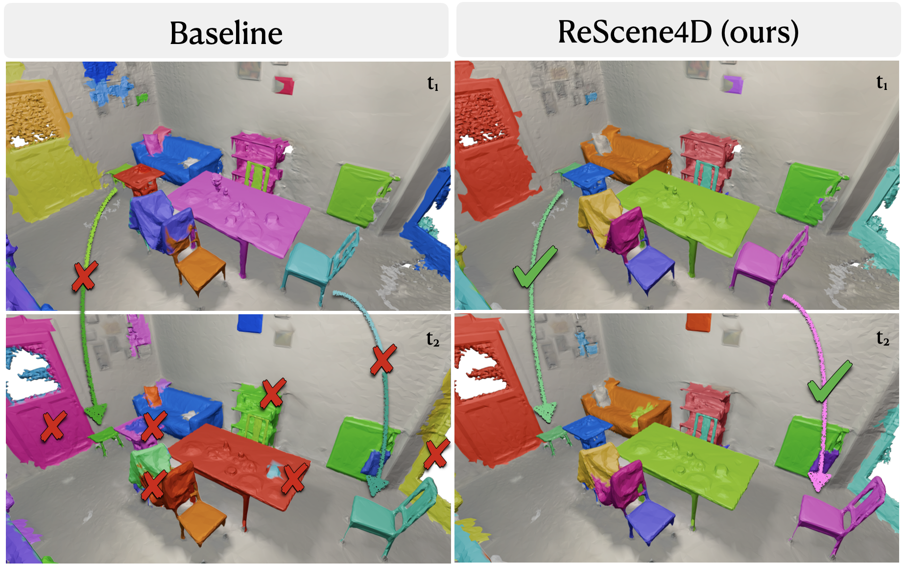
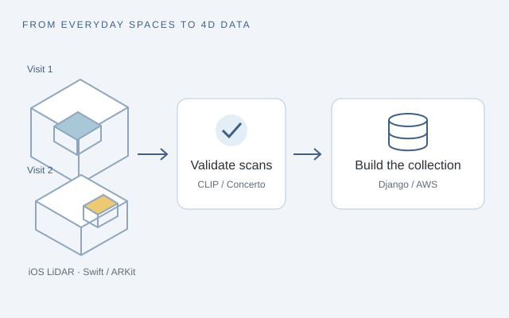
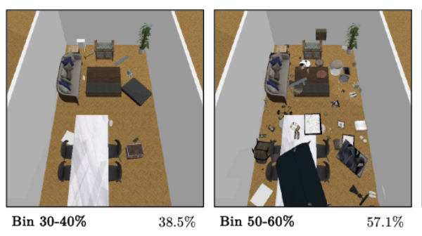
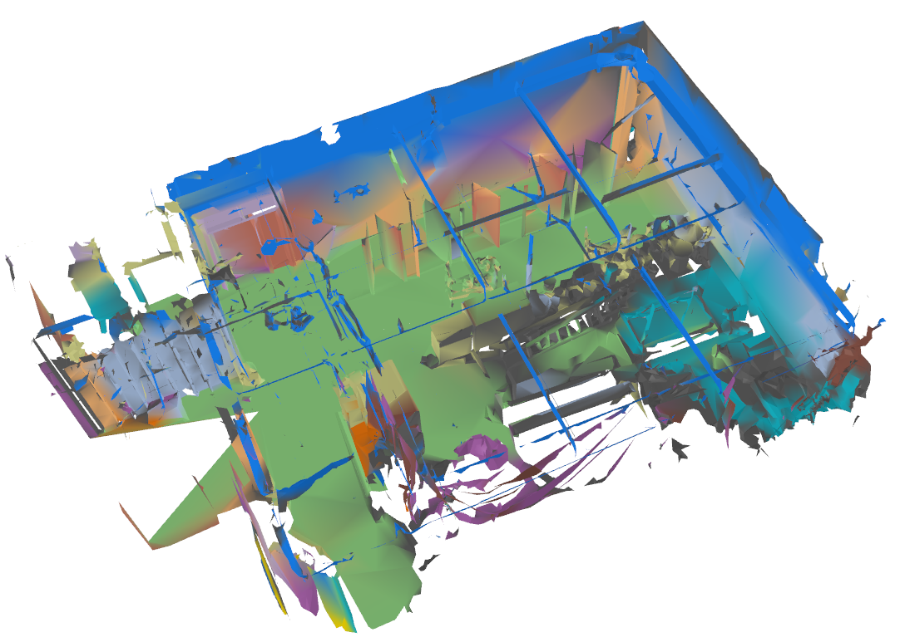

CVPR · 2026
ReScene4D: Temporally Consistent Semantic Instance Segmentation of Evolving Indoor 3D Scenes
Emily Steiner, Jianhao Zheng, Henry Howard-Jenkins, Chris Xie, Iro Armeni
I’m Emily, a PhD candidate in Electrical Engineering at Stanford, advised by Iro Armeni in the Gradient Spaces Lab. My research is supported by a TomKat Graduate Fellowship and a CIFE Seed Grant.
I study how machines perceive and represent 3D spaces as they change over time, connecting observations across views and revisits. Through work including ReScene4D, in collaboration with Meta Reality Labs, I develop methods and metrics for understanding evolving scenes. I’m interested in what these changes reveal about how people live in and adapt their spaces, and how we construct the built environment. My work brings together models, data collection, and evaluation to learn from these changes, connecting computer vision with questions in architecture, engineering, and construction.
Before Stanford, I completed my BASc in Honours Mechatronics Engineering at the University of Waterloo, with a Computing Option, graduating with distinction. During undergrad, I completed six internships spanning aerospace, robotics, imaging, and software engineering. Most recently, I interned at Waymo, working on fine-grained action recognition with vision-language models (VLMs) and data-efficient learning from video.
I led “Defining What Construction AI Needs to See” at the CIFE Summer Program, bringing together 70+ industry participants to help shape computer vision research for construction.
I interned at Waymo as a Technical Research Intern, working on fine-grained action recognition and data-efficient video learning.
ReScene4D is accepted at CVPR 2026! Code is available.
I was a teaching assistant for Computer Vision for the Built Environment at Stanford.
Our project, “Queryable Spatio-Temporal 4D Representation for Construction Progress Monitoring,” received a CIFE Seed Grant, led by Iro Armeni.
I was named a TomKat Graduate Fellow in Translational Research.
Research
If you find my work interesting and would like to chat, get in touch.

An iOS LiDAR scanning app, automated scan validation, and a cloud backend for collecting indoor spaces as they change.

Designed perturbation experiments that identified density-induced hallucination and object detection bottlenecks in 3D language models.
Project report ↗
Lifted GroundingDINO, SAM, and CLIP semantics into 3D meshes for zero-shot, query-driven monitoring of changing construction scenes.
Project report ↗Experience
2023–present
MS–PhD Candidate · Electrical Engineering
Advisor: Iro Armeni, Gradient Spaces Lab. GPA: 4.1.
2018–2023
BASc · Honours Mechatronics Engineering · Computing Option · Co-op
With Distinction; Dean’s Honour List. Cumulative average: 95.6%.
Apr 2024–present
Graduate Research Assistant · Advisor: Iro Armeni
Jun–Sep 2026
Technical Research Intern · Mentor: Chris Ying
Worked on fine-grained action recognition with Gemma, LoRA, and JAX; explored hierarchical classification and built temporal annotation tools for data-efficient video learning.
Winter 2024
PhD Rotation Student · Advisor: Gordon Wetzstein
Compared gaze- and head-steered beamforming for assistive hearing using eye-tracking, microphone-equipped glasses. View project poster ↗
Fall 2023
PhD Rotation Student · Advisor: Craig Levin
Studied conditional GANs for attenuation and scatter correction of multi-energy-window PET data.
May–Aug 2022
Hardware Research & Development Engineering Co-op
Built a multi-detector CT prototype that doubled capture speed; improved scan-time settings for a separate 3× speed increase without quality loss, deployed to customer machines.
Winter 2026
Teaching Assistant · Stanford CEE 147C/247C
Leading a redesign of course materials and assignments for Winter 2027.
2024–present
Graduate Mentor
Faculty Liaison (2024–2026), organizing faculty roundtables; Co-Mentorship Chair (2025–2026), coordinating mentorship and supporting STEM outreach.
2020–2022
Undergraduate Mentor
Supported students through their first internship applications, résumé reviews, and interview preparation.
Sep 2026
Lead Workshop Organizer · CIFE Summer Program
Hosted 70+ industry participants to connect construction needs with computer vision research and prioritize useful information from 3D job-site scans.
CVPR 2026
Workshop Organizer
ICRA 2025;
CVPR 2026
Challenge Organizer
My background is in mechatronics, with six undergraduate internships spanning aerospace, robotics, imaging, and software engineering. I worked on autonomous satellite operations (for a satellite launched in September 2020!), motor control and sensor feedback, LiDAR visualization, and CT imaging. Across these projects, I became increasingly interested in how machines use visual observations to understand their surroundings.
Extra Credit
2025–2027
Stanford University
2023
University of Waterloo
Drag Reduction System Automation capstone with Williams Racing Formula 1.
2022
2019, 2021, 2022
University of Waterloo
2018
... still a highlight
Score: 80 · Top 2% globally
I enjoy making ceramics and serve as Inventory Manager for the Stanford Ceramics Club.
I ride with the Stanford Cycling Team, where I’m the Outreach Chair and previously served as Women’s Race Captain.


1st Place · University of Waterloo Design Analysis Competition, sponsored by Ansys
Capstone with Williams Racing Formula 1: automated repositioning of a wind-tunnel model’s drag reduction system without disturbing its aerodynamic surfaces.